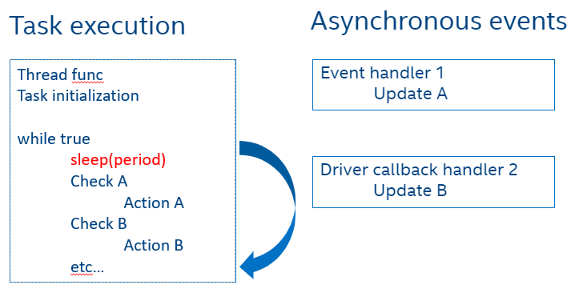

Task Handling¶
Embedded controller firmware is composed of multiple periodic tasks: platform power sequencing, thermal management, system management controller, battery management controller and so on.
This section describes how Zephyr RTOS kernel APIs are used to spawn threads for each of these different tasks.
Each module can be enabled or disabled depending on platform requirements via KConfig configuration. By default, the essential tasks to boot a platform are:
Power sequencing
Out-reset sequencing as required for Intel power design guidelines (PCH) as well as system sleep transitions.
Peripheral management
Handles human interface in the board including power button.
System management controller management
Minimum Intel BIOS - EC FW interaction
Other available modules:
KBC host management
Includes support to handle PS/2 keyboard/mouse and matrix keyboards.
Postcode management
If board does have any 7-segment array to display BIOS POST codes.
Implementation¶
The creation of thread uses Zephyr idiom for static threads which are simpler to implement and take less code. See K_THREAD_DEFINE The dynamic approach is possible but is not used since there are no plans to terminate any of the task in the middle of the execution.
From a system perspective, since embedded controllers are not multicore, the scheduling of such tasks should be done using some time slicing algorithm to achieve multitask execution.
Zephyr RTOS allows for application to choose between cooperative time-slicing and preemptive time-slicing. See Zephyr RTOS scheduling
In the first case, each application thread should voluntarily relinquish the CPU from time to time to permit other threads to execute either by sleeping or explicitly yielding the CPU.
In the second case, the time slicing mechanism offered by the Zephyr scheduler could be used. This will allow other threads of the same priority to execute even when a high priority thread never executes an action to make it unready. This will prevent starvation.
The embedded controller framework tasks are non-time critical so for simplicity use cooperative time slicing in which each task according to its defined periodicity will sleep for a pre-determined amount of time before becoming ready to perform its task again.
